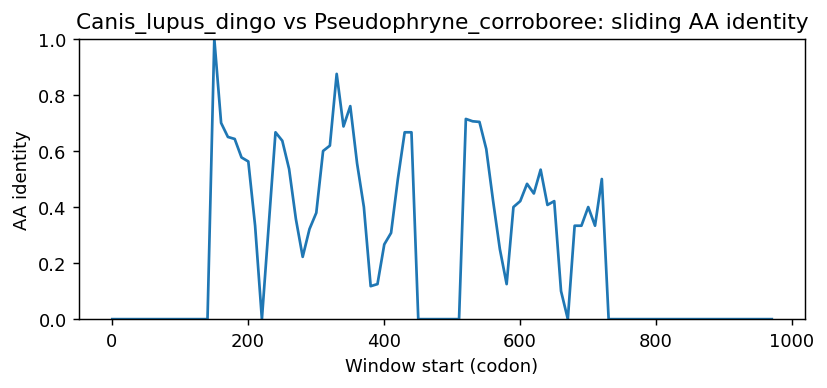

Ortholog Divergence Report
Input: STAP1.valid.longest.fa · N sequences: 311 · Aligned length: 979 codons
Reference: Canis_lupus_dingo
Quick risk overview
- LOW: 0
- INTERMEDIATE: 0
- HIGH: 48205


Composition & complexity per sequence
Saved as per_sequence_composition.csv. High low-complexity or repeat content can reduce BLAST sensitivity due to soft masking.
| id | GC | GC skew | CpG dens. | AA LCR frac | NT repeat frac | AA len | CDS len |
|---|---|---|---|---|---|---|---|
| Canis_lupus_dingo | 0.43355 | 0.03015 | 0.01309 | 0.04575 | 0.73529 | 306 | 918 |
| Bufo_bufo | 0.3894 | 0.03665 | 0.01633 | 0.0 | 0.6738 | 327 | 981 |
| Equus_przewalskii | 0.40741 | 0.04683 | 0.01573 | 0.09091 | 0.72054 | 297 | 891 |
| Capricornis_sumatraensis | 0.41204 | 0.03933 | 0.01159 | 0.09028 | 0.70949 | 288 | 864 |
| Galeopterus_variegatus | 0.40853 | 0.03846 | 0.00899 | 0.0 | 0.72278 | 297 | 891 |
| Arvicola_amphibius | 0.45791 | 0.08333 | 0.02584 | 0.10101 | 0.7486 | 297 | 891 |
| Tyto_alba | 0.47821 | 0.00493 | 0.02594 | 0.0 | 0.74558 | 283 | 849 |
| Athene_cunicularia | 0.45936 | -0.01538 | 0.01533 | 0.06714 | 0.72085 | 283 | 849 |
| Piliocolobus_tephrosceles | 0.41582 | 0.07609 | 0.01244 | 0.04068 | 0.71638 | 295 | 885 |
| Tympanuchus_pallidicinctus | 0.44255 | 0.00771 | 0.01708 | 0.04778 | 0.70876 | 293 | 879 |
| Falco_biarmicus | 0.46246 | -0.03896 | 0.01603 | 0.0 | 0.74575 | 333 | 999 |
| Panthera_pardus | 0.41901 | 0.05882 | 0.01763 | 0.04577 | 0.75587 | 284 | 852 |
| Equus_caballus | 0.40853 | 0.04945 | 0.01685 | 0.09091 | 0.72054 | 297 | 891 |
| Nyctibius_grandis | 0.45057 | -0.00971 | 0.01839 | 0.04987 | 0.75941 | 381 | 1143 |
| Bubalus_bubalis | 0.41319 | 0.04202 | 0.0139 | 0.09028 | 0.72338 | 288 | 864 |
| Cygnus_olor | 0.45299 | 0.02358 | 0.02139 | 0.0 | 0.71154 | 312 | 936 |
| Cygnus_atratus | 0.45299 | 0.02358 | 0.02139 | 0.0 | 0.71154 | 312 | 936 |
| Rhinopithecus_roxellana | 0.42034 | 0.07527 | 0.0181 | 0.0 | 0.70282 | 295 | 885 |
| Myotis_myotis | 0.40741 | 0.06887 | 0.01348 | 0.08754 | 0.7284 | 297 | 891 |
| Camelus_bactrianus | 0.41077 | 0.04918 | 0.01011 | 0.09091 | 0.74299 | 297 | 891 |
| Egretta_garzetta | 0.46398 | 0.00526 | 0.022 | 0.0 | 0.74725 | 273 | 819 |
| Microtus_ochrogaster | 0.45903 | 0.04645 | 0.02921 | 0.09764 | 0.75309 | 297 | 891 |
| Homo_sapiens | 0.41582 | 0.08696 | 0.01471 | 0.04746 | 0.68588 | 295 | 885 |
| Rhinolophus_ferrumequinum | 0.4164 | 0.05699 | 0.01512 | 0.12298 | 0.67638 | 309 | 927 |
| Dipodomys_merriami | 0.40561 | 0.07979 | 0.0108 | 0.04531 | 0.72492 | 309 | 927 |
| Callithrix_jacchus | 0.41243 | 0.07397 | 0.01018 | 0.08814 | 0.70395 | 295 | 885 |
| Lutra_lutra | 0.41696 | 0.0195 | 0.01512 | 0.0 | 0.68525 | 287 | 861 |
| Bos_indicus_x_Bos_taurus | 0.40972 | 0.03955 | 0.0139 | 0.09028 | 0.71875 | 288 | 864 |
| Eleutherodactylus_coqui | 0.42756 | -0.01422 | 0.03144 | 0.03647 | 0.70821 | 329 | 987 |
| Aquila_chrysaetos_chrysaetos | 0.45347 | -0.0026 | 0.01887 | 0.04594 | 0.75736 | 283 | 849 |
| Fulmarus_glacialis | 0.46172 | 0.01531 | 0.02123 | 0.04594 | 0.74676 | 283 | 849 |
| Jaculus_jaculus | 0.45567 | 0.00985 | 0.02472 | 0.08754 | 0.71829 | 297 | 891 |
| Alligator_mississippiensis | 0.40727 | 0.05357 | 0.01092 | 0.0 | 0.7297 | 275 | 825 |
| Dermochelys_coriacea | 0.45531 | 0.04703 | 0.01678 | 0.0 | 0.74302 | 358 | 1074 |
| Dipodomys_spectabilis | 0.39843 | 0.08732 | 0.01236 | 0.04714 | 0.73064 | 297 | 891 |
| Cariama_cristata | 0.46991 | -0.0197 | 0.02549 | 0.0 | 0.76273 | 288 | 864 |
| Vulpes_vulpes | 0.41569 | 0.0566 | 0.01276 | 0.04118 | 0.68137 | 340 | 1020 |
| Bison_bison_bison | 0.39688 | 0.03933 | 0.01116 | 0.08696 | 0.71683 | 299 | 897 |
| Myotis_yumanensis | 0.40965 | 0.06849 | 0.01461 | 0.08754 | 0.72615 | 297 | 891 |
| Puma_concolor | 0.42396 | 0.0172 | 0.01877 | 0.04062 | 0.76146 | 320 | 960 |
| Symphalangus_syndactylus | 0.41017 | 0.0854 | 0.01018 | 0.04746 | 0.6791 | 295 | 885 |
| Mirounga_angustirostris | 0.41017 | 0.03958 | 0.013 | 0.04545 | 0.68831 | 308 | 924 |
| Terrapene_triunguis | 0.46859 | -0.02048 | 0.02183 | 0.0 | 0.73822 | 382 | 1146 |
| Mustela_nigripes | 0.42973 | 0.01622 | 0.0186 | 0.05226 | 0.69222 | 287 | 861 |
| Sturnira_hondurensis | 0.41319 | 0.05322 | 0.01506 | 0.04861 | 0.72454 | 288 | 864 |
| Rhinatrema_bivittatum | 0.43231 | -0.02808 | 0.01589 | 0.0 | 0.72082 | 357 | 1071 |
| Leopardus_geoffroyi | 0.42019 | 0.05587 | 0.0188 | 0.04577 | 0.75587 | 284 | 852 |
| Hylobates_moloch | 0.41225 | 0.08816 | 0.01455 | 0.08411 | 0.67601 | 321 | 963 |
| Pan_troglodytes | 0.41243 | 0.10137 | 0.01244 | 0.04746 | 0.68588 | 295 | 885 |
| Apteryx_mantelli | 0.44622 | 0.0358 | 0.02452 | 0.0 | 0.72417 | 313 | 939 |
| Cervus_elaphus | 0.41782 | 0.04155 | 0.01622 | 0.09028 | 0.71412 | 288 | 864 |
| Bombina_bombina | 0.41002 | 0.07232 | 0.01535 | 0.0 | 0.70961 | 326 | 978 |
| Peromyscus_maniculatus_bairdii | 0.43322 | 0.04663 | 0.02022 | 0.09428 | 0.7486 | 297 | 891 |
| Marmota_monax | 0.40404 | 0.06667 | 0.01124 | 0.04714 | 0.65657 | 297 | 891 |
| Panthera_uncia | 0.41901 | 0.05882 | 0.01763 | 0.04577 | 0.75587 | 284 | 852 |
| Saimiri_boliviensis | 0.41243 | 0.06301 | 0.01018 | 0.04746 | 0.69492 | 295 | 885 |
| Colobus_angolensis_palliatus | 0.4226 | 0.06952 | 0.01584 | 0.04068 | 0.70847 | 295 | 885 |
| Crocodylus_porosus | 0.41561 | 0.03553 | 0.01373 | 0.0 | 0.7384 | 316 | 948 |
| Halichoerus_grypus | 0.41551 | 0.02507 | 0.01275 | 0.09722 | 0.68519 | 288 | 864 |
| Phoca_vitulina | 0.41492 | 0.03371 | 0.01284 | 0.0979 | 0.70047 | 286 | 858 |
| Equus_asinus | 0.4119 | 0.03542 | 0.01798 | 0.09091 | 0.72054 | 297 | 891 |
| Manis_javanica | 0.40376 | 0.02907 | 0.0141 | 0.09507 | 0.72418 | 284 | 852 |
| Buceros_rhinoceros_silvestris | 0.48095 | -0.00495 | 0.02265 | 0.0 | 0.72262 | 280 | 840 |
| Mustela_erminea | 0.42741 | 0.0 | 0.01977 | 0.0 | 0.70267 | 287 | 861 |
| Mus_pahari | 0.43434 | 0.02842 | 0.01461 | 0.12795 | 0.72166 | 297 | 891 |
| Myotis_brandtii | 0.4119 | 0.06267 | 0.01461 | 0.08754 | 0.7284 | 297 | 891 |
| Suncus_etruscus | 0.3895 | 0.03448 | 0.01345 | 0.05128 | 0.70085 | 273 | 819 |
| Mirounga_leonina | 0.40639 | 0.03371 | 0.01257 | 0.04795 | 0.69178 | 292 | 876 |
| Falco_naumanni | 0.46172 | -0.04082 | 0.01651 | 0.0424 | 0.70671 | 283 | 849 |
| Grammomys_surdaster | 0.43547 | 0.04124 | 0.0191 | 0.04714 | 0.75084 | 297 | 891 |
| Desmodus_rotundus | 0.41435 | 0.02793 | 0.01738 | 0.09028 | 0.73148 | 288 | 864 |
| Vicugna_pacos | 0.4119 | 0.05177 | 0.01124 | 0.08754 | 0.74411 | 297 | 891 |
| Gavia_stellata | 0.47687 | 0.0 | 0.02969 | 0.0 | 0.78055 | 281 | 843 |
| Meles_meles | 0.42625 | 0.00817 | 0.0186 | 0.0 | 0.68873 | 287 | 861 |
| Trichechus_manatus_latirostris | 0.41778 | 0.08511 | 0.01669 | 0.17667 | 0.71444 | 300 | 900 |
| Ceratotherium_simum_simum | 0.4018 | 0.05587 | 0.01348 | 0.09091 | 0.72503 | 297 | 891 |
| Panthera_tigris | 0.42136 | 0.05292 | 0.01998 | 0.04577 | 0.75587 | 284 | 852 |
| Tupaia_chinensis | 0.4117 | 0.04545 | 0.01288 | 0.04912 | 0.69591 | 285 | 855 |
| Echinops_telfairi | 0.41996 | 0.10705 | 0.01756 | 0.03947 | 0.70285 | 304 | 912 |
| Pelecanus_crispus | 0.46367 | -0.04478 | 0.01848 | 0.0 | 0.72203 | 289 | 867 |
| Sorex_fumeus | 0.40659 | 0.003 | 0.01589 | 0.05128 | 0.76313 | 273 | 819 |
| Acomys_russatus | 0.44332 | 0.00759 | 0.01798 | 0.09091 | 0.69473 | 297 | 891 |
| Dasypus_novemcinctus | 0.40516 | 0.08587 | 0.01124 | 0.08754 | 0.70034 | 297 | 891 |
| Orycteropus_afer_afer | 0.39903 | 0.06538 | 0.01257 | 0.08406 | 0.72657 | 345 | 1035 |
| Malaclemys_terrapin_pileata | 0.46344 | 0.03279 | 0.02186 | 0.03419 | 0.71795 | 351 | 1053 |
| Pipistrellus_kuhlii | 0.41302 | 0.07065 | 0.01124 | 0.08754 | 0.73401 | 297 | 891 |
| Nothoprocta_perdicaria | 0.46959 | 0.00984 | 0.02465 | 0.06236 | 0.69592 | 433 | 1299 |
| Nyctereutes_procyonoides | 0.41638 | 0.05464 | 0.01367 | 0.04778 | 0.70307 | 293 | 879 |
| Macaca_mulatta | 0.41243 | 0.08493 | 0.01018 | 0.04746 | 0.69492 | 295 | 885 |
| Saccopteryx_leptura | 0.41319 | 0.02521 | 0.01854 | 0.04861 | 0.74074 | 288 | 864 |
| Caretta_caretta | 0.46344 | 0.06148 | 0.02281 | 0.0 | 0.74549 | 351 | 1053 |
| Macaca_thibetana_thibetana | 0.41469 | 0.08992 | 0.01244 | 0.04746 | 0.69492 | 295 | 885 |
| Camelus_ferus | 0.41077 | 0.04918 | 0.01011 | 0.09091 | 0.74299 | 297 | 891 |
| Emydura_macquarii_macquarii | 0.46089 | 0.08283 | 0.0205 | 0.10615 | 0.76629 | 358 | 1074 |
| Enhydra_lutris_kenyoni | 0.41928 | 0.01385 | 0.01744 | 0.0 | 0.6806 | 287 | 861 |
| Apteryx_rowi | 0.44754 | 0.03734 | 0.02323 | 0.039 | 0.70009 | 359 | 1077 |
| Elephantulus_edwardii | 0.39977 | 0.08169 | 0.00789 | 0.0473 | 0.70946 | 296 | 888 |
| Haliaeetus_albicilla | 0.46054 | -0.00767 | 0.02476 | 0.0 | 0.74558 | 283 | 849 |
| Phyllostomus_hastatus | 0.40972 | 0.02825 | 0.01506 | 0.04861 | 0.69097 | 288 | 864 |
| Balaenoptera_acutorostrata | 0.41863 | 0.04021 | 0.01461 | 0.09091 | 0.72503 | 297 | 891 |
| Pteropus_giganteus | 0.39805 | 0.06135 | 0.01467 | 0.08791 | 0.7326 | 273 | 819 |
| Erinaceus_europaeus | 0.40825 | -0.00532 | 0.01413 | 0.08795 | 0.74159 | 307 | 921 |
| Mauremys_reevesii | 0.46541 | 0.05792 | 0.02248 | 0.0 | 0.73226 | 371 | 1113 |
| Ailuropoda_melanoleuca | 0.41411 | 0.03297 | 0.01139 | 0.09215 | 0.67918 | 293 | 879 |
| Ursus_arctos | 0.41411 | 0.03846 | 0.01253 | 0.12969 | 0.67918 | 293 | 879 |
| Choloepus_didactylus | 0.41614 | 0.0051 | 0.00956 | 0.04459 | 0.70382 | 314 | 942 |
| Anas_acuta | 0.45359 | -0.01395 | 0.01901 | 0.0 | 0.71519 | 316 | 948 |
| Falco_peregrinus | 0.46246 | -0.04329 | 0.01603 | 0.0 | 0.74174 | 333 | 999 |
| Microtus_oregoni | 0.45455 | 0.05185 | 0.02697 | 0.10101 | 0.74523 | 297 | 891 |
| Pelobates_fuscus | 0.41719 | 0.09548 | 0.01469 | 0.0 | 0.7673 | 318 | 954 |
| Accipiter_gentilis | 0.45347 | -0.01818 | 0.02005 | 0.0424 | 0.7338 | 283 | 849 |
| Phasianus_colchicus | 0.42662 | 0.01333 | 0.01139 | 0.04778 | 0.73606 | 293 | 879 |
| Ochotona_princeps | 0.43889 | 0.00759 | 0.01557 | 0.04333 | 0.77444 | 300 | 900 |
| Cervus_canadensis | 0.41898 | 0.03867 | 0.01622 | 0.09028 | 0.71412 | 288 | 864 |
| Pseudophryne_corroboree | 0.40675 | 0.05366 | 0.01589 | 0.0 | 0.68254 | 336 | 1008 |
| Bos_javanicus | 0.41534 | 0.03077 | 0.01279 | 0.08307 | 0.73589 | 313 | 939 |
| Ochotona_curzoniae | 0.42371 | 0.06371 | 0.01645 | 0.04577 | 0.75939 | 284 | 852 |
| Balaenoptera_ricei | 0.41435 | 0.04469 | 0.01622 | 0.09375 | 0.72106 | 288 | 864 |
| Antrostomus_carolinensis | 0.47468 | -0.02233 | 0.02241 | 0.08481 | 0.74323 | 283 | 849 |
| Eptesicus_fuscus | 0.40162 | 0.05476 | 0.0139 | 0.09028 | 0.72338 | 288 | 864 |
| Bos_mutus | 0.41204 | 0.04494 | 0.0139 | 0.09028 | 0.72106 | 288 | 864 |
| Castor_canadensis | 0.39731 | 0.0678 | 0.01124 | 0.04714 | 0.74635 | 297 | 891 |
| Eschrichtius_robustus | 0.42088 | 0.04533 | 0.01573 | 0.09091 | 0.73625 | 297 | 891 |
| Oryx_dammah | 0.41375 | 0.03662 | 0.01517 | 0.09091 | 0.73893 | 286 | 858 |
| Psammomys_obesus | 0.43522 | 0.04326 | 0.01552 | 0.08638 | 0.7165 | 301 | 903 |
| Zalophus_californianus | 0.40614 | 0.03641 | 0.01253 | 0.04437 | 0.68714 | 293 | 879 |
| Falco_cherrug | 0.46246 | -0.03896 | 0.01603 | 0.0 | 0.74575 | 333 | 999 |
| Mandrillus_leucophaeus | 0.41441 | 0.08696 | 0.01127 | 0.0473 | 0.68806 | 296 | 888 |
| Ovis_canadensis | 0.41551 | 0.03064 | 0.01506 | 0.09028 | 0.72801 | 288 | 864 |
| Carlito_syrichta | 0.41871 | 0.05587 | 0.01288 | 0.09474 | 0.73801 | 285 | 855 |
| Bufo_gargarizans | 0.39209 | 0.05722 | 0.01925 | 0.0 | 0.69017 | 312 | 936 |
| Spea_bombifrons | 0.41304 | 0.04762 | 0.00933 | 0.03727 | 0.78261 | 322 | 966 |
| Struthio_camelus | 0.44764 | 0.08382 | 0.01747 | 0.06806 | 0.72513 | 382 | 1146 |
| Odobenus_rosmarus_divergens | 0.42968 | 0.01546 | 0.01441 | 0.04319 | 0.70543 | 301 | 903 |
| Sus_scrofa | 0.42088 | 0.056 | 0.01124 | 0.04377 | 0.6936 | 297 | 891 |
| Arvicanthis_niloticus | 0.43547 | 0.03608 | 0.01461 | 0.09091 | 0.77104 | 297 | 891 |
| Gopherus_flavomarginatus | 0.45438 | 0.04508 | 0.01957 | 0.0 | 0.73184 | 358 | 1074 |
| Petaurus_breviceps_papuanus | 0.42505 | 0.07657 | 0.01185 | 0.1568 | 0.74951 | 338 | 1014 |
| Sciurus_carolinensis | 0.40404 | 0.06111 | 0.01573 | 0.04714 | 0.70932 | 297 | 891 |
| Dipodomys_ordii | 0.4018 | 0.09497 | 0.01124 | 0.04714 | 0.72952 | 297 | 891 |
| Vulpes_lagopus | 0.41752 | 0.04632 | 0.01253 | 0.04778 | 0.69625 | 293 | 879 |
| Mus_musculus | 0.44108 | 0.03308 | 0.01798 | 0.08754 | 0.74523 | 297 | 891 |
| Microcebus_murinus | 0.43659 | 0.0437 | 0.02022 | 0.04714 | 0.71268 | 297 | 891 |
| Centrocercus_urophasianus | 0.43972 | 0.02688 | 0.01657 | 0.04965 | 0.72104 | 282 | 846 |
| Coturnix_japonica | 0.46322 | -0.00744 | 0.02762 | 0.0 | 0.77356 | 290 | 870 |
| Tauraco_erythrolophus | 0.47203 | 0.01728 | 0.0245 | 0.07343 | 0.77389 | 286 | 858 |
| Trachypithecus_francoisi | 0.41696 | 0.08078 | 0.01628 | 0.0 | 0.70732 | 287 | 861 |
| Phacochoerus_africanus | 0.422 | 0.05851 | 0.01011 | 0.04377 | 0.69248 | 297 | 891 |
| Sapajus_apella | 0.4113 | 0.08242 | 0.00792 | 0.1322 | 0.68362 | 295 | 885 |
| Aotus_nancymaae | 0.41469 | 0.06267 | 0.01131 | 0.08814 | 0.68814 | 295 | 885 |
| Marmota_marmota_marmota | 0.40516 | 0.06925 | 0.01124 | 0.04714 | 0.6532 | 297 | 891 |
| Gracilinanus_agilis | 0.42209 | 0.1028 | 0.01579 | 0.07101 | 0.71499 | 338 | 1014 |
| Grus_americana | 0.45936 | -0.01026 | 0.02476 | 0.0 | 0.74676 | 283 | 849 |
| Falco_rusticolus | 0.45936 | -0.02564 | 0.01651 | 0.0 | 0.73145 | 283 | 849 |
| Lynx_rufus | 0.42254 | 0.06667 | 0.01998 | 0.04577 | 0.77465 | 284 | 852 |
| Onychomys_torridus | 0.42873 | 0.04712 | 0.01798 | 0.09428 | 0.7587 | 297 | 891 |
| Phyllostomus_discolor | 0.41088 | 0.03662 | 0.01275 | 0.04861 | 0.68287 | 288 | 864 |
| Ornithorhynchus_anatinus | 0.57784 | 0.05009 | 0.07093 | 0.11677 | 0.71357 | 334 | 1002 |
| Cricetulus_griseus | 0.42905 | 0.03412 | 0.01353 | 0.09459 | 0.7241 | 296 | 888 |
| Indicator_indicator | 0.57424 | -0.06332 | 0.04928 | 0.10909 | 0.71364 | 440 | 1320 |
| Lemur_catta | 0.42536 | 0.07124 | 0.0191 | 0.04714 | 0.70483 | 297 | 891 |
| Rattus_norvegicus | 0.43949 | 0.02415 | 0.01807 | 0.04459 | 0.73248 | 314 | 942 |
| Chaetura_pelagica | 0.50798 | -0.01664 | 0.03759 | 0.0338 | 0.7061 | 355 | 1065 |
| Pogoniulus_pusillus | 0.5006 | 0.00716 | 0.01555 | 0.0 | 0.74194 | 279 | 837 |
| Papio_anubis | 0.41356 | 0.0765 | 0.01018 | 0.04746 | 0.69718 | 295 | 885 |
| Peromyscus_californicus_insignis | 0.42649 | 0.04737 | 0.01798 | 0.13468 | 0.73625 | 297 | 891 |
| Charadrius_vociferus | 0.46227 | -0.00413 | 0.01912 | 0.03725 | 0.7469 | 349 | 1047 |
| Peromyscus_eremicus | 0.42761 | 0.05512 | 0.01798 | 0.09428 | 0.75533 | 297 | 891 |
| Pelodiscus_sinensis | 0.50683 | 0.02694 | 0.03457 | 0.02892 | 0.73655 | 415 | 1245 |
| Mesitornis_unicolor | 0.49823 | -0.00236 | 0.02948 | 0.05654 | 0.75265 | 283 | 849 |
| Rattus_rattus | 0.43996 | 0.01531 | 0.02022 | 0.04714 | 0.75533 | 297 | 891 |
| Geotrypetes_seraphini | 0.42939 | 0.04251 | 0.01154 | 0.0 | 0.73487 | 347 | 1041 |
| Manis_pentadactyla | 0.40141 | 0.03509 | 0.0141 | 0.09507 | 0.71362 | 284 | 852 |
| Pteropus_alecto | 0.39805 | 0.06135 | 0.01467 | 0.08791 | 0.7326 | 273 | 819 |
| Moschus_berezovskii | 0.42245 | 0.03562 | 0.01854 | 0.09028 | 0.72106 | 288 | 864 |
| Octodon_degus | 0.40889 | 0.07609 | 0.01446 | 0.04667 | 0.75556 | 300 | 900 |
| Pteronotus_mesoamericanus | 0.40999 | 0.05949 | 0.01977 | 0.0453 | 0.71661 | 287 | 861 |
| Capra_hircus | 0.41088 | 0.03099 | 0.0139 | 0.09028 | 0.72569 | 288 | 864 |
| Xenopus_tropicalis | 0.39706 | 0.03086 | 0.0135 | 0.0 | 0.72672 | 272 | 816 |
| Cebus_imitator | 0.41243 | 0.07397 | 0.00905 | 0.08814 | 0.69266 | 295 | 885 |
| Myotis_daubentonii | 0.40741 | 0.06887 | 0.01348 | 0.08754 | 0.73401 | 297 | 891 |
| Fukomys_damarensis | 0.41051 | 0.05177 | 0.00896 | 0.04362 | 0.67226 | 298 | 894 |
| Sorex_araneus | 0.40049 | 0.0 | 0.01711 | 0.05128 | 0.76068 | 273 | 819 |
| Eulemur_rufifrons | 0.42649 | 0.05789 | 0.01685 | 0.04714 | 0.7284 | 297 | 891 |
| Eubalaena_glacialis | 0.42088 | 0.03467 | 0.01573 | 0.09091 | 0.73625 | 297 | 891 |
| Alligator_sinensis | 0.4156 | 0.03856 | 0.01283 | 0.03846 | 0.73184 | 312 | 936 |
| Canis_lupus_familiaris | 0.43355 | 0.03015 | 0.01309 | 0.04575 | 0.73529 | 306 | 918 |
| Rana_temporaria | 0.41691 | 0.06604 | 0.0187 | 0.0708 | 0.7001 | 339 | 1017 |
| Propithecus_coquereli | 0.40278 | 0.10345 | 0.01236 | 0.0 | 0.75463 | 216 | 648 |
| Oryctolagus_cuniculus | 0.42873 | 0.05236 | 0.01348 | 0.04714 | 0.72615 | 297 | 891 |
| Gallus_gallus | 0.4471 | 0.03308 | 0.01708 | 0.04778 | 0.72355 | 293 | 879 |
| Nanorana_parkeri | 0.41279 | 0.07512 | 0.02037 | 0.0 | 0.7064 | 344 | 1032 |
| Prionailurus_bengalensis | 0.42044 | 0.06077 | 0.0186 | 0.0453 | 0.7712 | 287 | 861 |
| Neofelis_nebulosa | 0.42136 | 0.0585 | 0.01763 | 0.04577 | 0.75822 | 284 | 852 |
| Dromiciops_gliroides | 0.42947 | 0.06083 | 0.01569 | 0.07837 | 0.71682 | 319 | 957 |
| Chelonoidis_abingdonii | 0.45869 | 0.03934 | 0.01901 | 0.03704 | 0.7265 | 351 | 1053 |
| Budorcas_taxicolor | 0.41319 | 0.03641 | 0.0139 | 0.09028 | 0.71644 | 288 | 864 |
| Ranitomeya_imitator | 0.40685 | 0.00495 | 0.02319 | 0.0 | 0.73515 | 331 | 993 |
| Vombatus_ursinus | 0.43627 | 0.06966 | 0.01472 | 0.11471 | 0.72157 | 340 | 1020 |
| Nipponia_nippon | 0.45981 | -0.00257 | 0.0213 | 0.0 | 0.74941 | 282 | 846 |
| Pleurodeles_waltl | 0.46028 | 0.01313 | 0.02247 | 0.03627 | 0.7228 | 386 | 1158 |
| Diceros_bicornis_minor | 0.39843 | 0.05915 | 0.01236 | 0.09091 | 0.72727 | 297 | 891 |
| Neogale_vison | 0.43786 | -0.00265 | 0.02442 | 0.0 | 0.69454 | 287 | 861 |
| Rissa_tridactyla | 0.46643 | 0.05556 | 0.02123 | 0.0 | 0.74558 | 283 | 849 |
| Phalacrocorax_carbo | 0.45583 | -0.00258 | 0.01887 | 0.0 | 0.71496 | 283 | 849 |
| Macaca_nemestrina | 0.41243 | 0.08493 | 0.01018 | 0.04746 | 0.69492 | 295 | 885 |
| Odocoileus_virginianus | 0.41319 | 0.04762 | 0.01506 | 0.09028 | 0.71296 | 288 | 864 |
| Peromyscus_leucopus | 0.43547 | 0.04124 | 0.02135 | 0.09428 | 0.75084 | 297 | 891 |
| Chlorocebus_sabaeus | 0.41017 | 0.07989 | 0.01018 | 0.04746 | 0.69944 | 295 | 885 |
| Meleagris_gallopavo | 0.44255 | 0.00257 | 0.01708 | 0.04778 | 0.71672 | 293 | 879 |
| Otolemur_garnettii | 0.42005 | 0.06166 | 0.00676 | 0.08784 | 0.74099 | 296 | 888 |
| Mustela_putorius_furo | 0.43206 | 0.01613 | 0.0186 | 0.05226 | 0.69338 | 287 | 861 |
| Pongo_pygmaeus | 0.41469 | 0.09537 | 0.01471 | 0.04746 | 0.69266 | 295 | 885 |
| Perognathus_longimembris_pacificus | 0.42424 | 0.10053 | 0.0236 | 0.04714 | 0.68575 | 297 | 891 |
| Cyrtonyx_montezumae | 0.45856 | 0.07631 | 0.01935 | 0.03867 | 0.73481 | 362 | 1086 |
| Melanerpes_formicivorus | 0.5119 | 0.0407 | 0.02534 | 0.08929 | 0.8125 | 224 | 672 |
| Emys_orbicularis | 0.46249 | 0.05133 | 0.02091 | 0.0 | 0.73504 | 351 | 1053 |
| Gorilla_gorilla_gorilla | 0.41356 | 0.0929 | 0.01471 | 0.04746 | 0.69718 | 295 | 885 |
| Suricata_suricatta | 0.41411 | 0.04396 | 0.01822 | 0.04437 | 0.71672 | 293 | 879 |
| Felis_catus | 0.42348 | 0.01485 | 0.01889 | 0.04088 | 0.75577 | 318 | 954 |
| Heterocephalus_glaber | 0.40067 | 0.05882 | 0.00899 | 0.04714 | 0.70258 | 297 | 891 |
| Lynx_canadensis | 0.42136 | 0.06964 | 0.01998 | 0.04577 | 0.76291 | 284 | 852 |
| Pygoscelis_adeliae | 0.45307 | -0.00634 | 0.01726 | 0.0 | 0.72989 | 348 | 1044 |
| Callorhinus_ursinus | 0.40956 | 0.03333 | 0.01481 | 0.04437 | 0.68601 | 293 | 879 |
| Ovis_aries | 0.41204 | 0.03371 | 0.0139 | 0.09028 | 0.70949 | 288 | 864 |
| Lontra_canadensis | 0.4216 | 0.01377 | 0.01628 | 0.0 | 0.68873 | 287 | 861 |
| Monodelphis_domestica | 0.41913 | 0.09176 | 0.01086 | 0.07101 | 0.72189 | 338 | 1014 |
| Mastomys_coucha | 0.43434 | 0.03876 | 0.01348 | 0.04714 | 0.70483 | 297 | 891 |
| Cavia_porcellus | 0.44174 | 0.02294 | 0.02231 | 0.0 | 0.70821 | 329 | 987 |
| Leptonychotes_weddellii | 0.40863 | 0.06634 | 0.00905 | 0.08434 | 0.68072 | 332 | 996 |
| Cercocebus_atys | 0.41356 | 0.08197 | 0.01244 | 0.04746 | 0.69266 | 295 | 885 |
| Apodemus_sylvaticus | 0.45567 | 0.05419 | 0.02697 | 0.04714 | 0.72952 | 297 | 891 |
| Theropithecus_gelada | 0.4113 | 0.07692 | 0.01018 | 0.04746 | 0.68362 | 295 | 885 |
| Artibeus_jamaicensis | 0.41898 | 0.04972 | 0.01622 | 0.04861 | 0.72222 | 288 | 864 |
| Mus_caroli | 0.43547 | 0.03608 | 0.01236 | 0.08754 | 0.74635 | 297 | 891 |
| Talpa_occidentalis | 0.39141 | 0.04451 | 0.01163 | 0.0 | 0.74216 | 287 | 861 |
| Hippopotamus_amphibius_kiboko | 0.41435 | 0.02793 | 0.0197 | 0.13889 | 0.68171 | 288 | 864 |
| Pongo_abelii | 0.41637 | 0.10112 | 0.01405 | 0.04912 | 0.6924 | 285 | 855 |
| Anser_cygnoides | 0.45726 | 0.03271 | 0.02139 | 0.0 | 0.73504 | 312 | 936 |
| Elephas_maximus_indicus | 0.39731 | 0.0678 | 0.00899 | 0.09428 | 0.72166 | 297 | 891 |
| Pan_paniscus | 0.41356 | 0.09836 | 0.01244 | 0.04746 | 0.68588 | 295 | 885 |
| Meriones_unguiculatus | 0.43556 | 0.03571 | 0.01557 | 0.04667 | 0.71111 | 300 | 900 |
| Gopherus_evgoodei | 0.4581 | 0.04472 | 0.01957 | 0.0 | 0.74674 | 358 | 1074 |
| Chinchilla_lanigera | 0.41302 | 0.02717 | 0.01798 | 0.04714 | 0.74299 | 297 | 891 |
| Bubalus_kerabau | 0.41551 | 0.03621 | 0.0139 | 0.09028 | 0.71875 | 288 | 864 |
| Panthera_leo | 0.41901 | 0.05882 | 0.01763 | 0.04577 | 0.75587 | 284 | 852 |
| Oxyura_jamaicensis | 0.44481 | 0.04623 | 0.01733 | 0.0 | 0.71861 | 308 | 924 |
| Eumetopias_jubatus | 0.40387 | 0.03662 | 0.01139 | 0.04437 | 0.68714 | 293 | 879 |
| Myotis_davidii | 0.41077 | 0.06557 | 0.01573 | 0.08754 | 0.72278 | 297 | 891 |
| Phascolarctos_cinereus | 0.43469 | 0.03365 | 0.01151 | 0.12226 | 0.73145 | 319 | 957 |
| Acinonyx_jubatus | 0.42136 | 0.06407 | 0.0188 | 0.04577 | 0.75587 | 284 | 852 |
| Hyaena_hyaena | 0.41297 | 0.04683 | 0.01936 | 0.04437 | 0.71786 | 293 | 879 |
| Cuculus_canorus | 0.46408 | 0.01523 | 0.01769 | 0.0 | 0.75265 | 283 | 849 |
| Myotis_lucifugus | 0.4119 | 0.05722 | 0.01461 | 0.08754 | 0.73288 | 297 | 891 |
| Mesoplodon_densirostris | 0.41302 | 0.04348 | 0.01236 | 0.04714 | 0.7486 | 297 | 891 |
| Balearica_regulorum_gibbericeps | 0.45347 | -0.00779 | 0.01769 | 0.0 | 0.74323 | 283 | 849 |
| Rhea_pennata | 0.43976 | 0.02283 | 0.02211 | 0.0 | 0.72289 | 332 | 996 |
| Alexandromys_fortis | 0.46016 | 0.02927 | 0.02921 | 0.10101 | 0.74074 | 297 | 891 |
| Pteropus_vampyrus | 0.39805 | 0.06135 | 0.01467 | 0.08791 | 0.7326 | 273 | 819 |
| Chionomys_nivalis | 0.45118 | 0.04478 | 0.02584 | 0.13468 | 0.74635 | 297 | 891 |
| Saccopteryx_bilineata | 0.41088 | 0.03099 | 0.01738 | 0.04861 | 0.74074 | 288 | 864 |
| Neomonachus_schauinslandi | 0.41041 | 0.07317 | 0.01102 | 0.08408 | 0.68268 | 333 | 999 |
| Chrysemys_picta_bellii | 0.46344 | 0.03689 | 0.02186 | 0.03419 | 0.72365 | 351 | 1053 |
| Lepus_europaeus | 0.42873 | 0.0733 | 0.01573 | 0.09091 | 0.72391 | 297 | 891 |
| Tachyglossus_aculeatus | 0.54167 | 0.03297 | 0.05065 | 0.0744 | 0.71032 | 336 | 1008 |
| Molossus_molossus | 0.40162 | 0.04323 | 0.01275 | 0.04861 | 0.75463 | 288 | 864 |
| Chroicocephalus_ridibundus | 0.47024 | 0.05823 | 0.02503 | 0.0 | 0.72976 | 280 | 840 |
| Harpia_harpyja | 0.46054 | -0.00256 | 0.02123 | 0.04594 | 0.74558 | 283 | 849 |
| Ambystoma_mexicanum | 0.49145 | 0.06435 | 0.02823 | 0.04359 | 0.7453 | 390 | 1170 |
| Urocitellus_parryii | 0.40678 | 0.06111 | 0.01131 | 0.04746 | 0.68588 | 295 | 885 |
| Panthera_onca | 0.41901 | 0.05882 | 0.01763 | 0.04577 | 0.75587 | 284 | 852 |
| Ursus_americanus | 0.41183 | 0.03315 | 0.01253 | 0.12969 | 0.68146 | 293 | 879 |
| Opisthocomus_hoazin | 0.47281 | -0.04 | 0.02485 | 0.0461 | 0.70922 | 282 | 846 |
| Chelonia_mydas | 0.46332 | 0.07014 | 0.01952 | 0.0 | 0.74188 | 359 | 1077 |
| Camelus_dromedarius | 0.41077 | 0.05464 | 0.01236 | 0.09091 | 0.74523 | 297 | 891 |
| Dryobates_pubescens | 0.52128 | 0.02494 | 0.01775 | 0.06738 | 0.78723 | 282 | 846 |
| Equus_quagga | 0.41302 | 0.03804 | 0.01798 | 0.04714 | 0.72054 | 297 | 891 |
| Sarcophilus_harrisii | 0.43064 | 0.01442 | 0.01865 | 0.04348 | 0.7588 | 322 | 966 |
| Lagopus_muta | 0.44799 | 0.02902 | 0.01775 | 0.04965 | 0.73877 | 282 | 846 |
| Aythya_fuligula | 0.45417 | -0.00459 | 0.02294 | 0.0375 | 0.70729 | 320 | 960 |
| Bos_taurus | 0.41427 | 0.02314 | 0.01173 | 0.08307 | 0.73376 | 313 | 939 |
| Prionailurus_viverrinus | 0.42136 | 0.06407 | 0.0188 | 0.04577 | 0.75587 | 284 | 852 |
| Myodes_glareolus | 0.45985 | 0.03349 | 0.02313 | 0.09901 | 0.74257 | 303 | 909 |
| Puma_yagouaroundi | 0.42604 | 0.01711 | 0.01981 | 0.04062 | 0.75104 | 320 | 960 |
| Rhinopithecus_bieti | 0.42034 | 0.07527 | 0.0181 | 0.0 | 0.71186 | 295 | 885 |
| Gymnogyps_californianus | 0.46429 | -0.00513 | 0.02026 | 0.0 | 0.77857 | 280 | 840 |
| Mustela_lutreola | 0.42973 | 0.01081 | 0.01744 | 0.0 | 0.69338 | 287 | 861 |
| Macaca_fascicularis | 0.41243 | 0.08493 | 0.01018 | 0.04746 | 0.69492 | 295 | 885 |
| Haliaeetus_leucocephalus | 0.46054 | -0.01279 | 0.02358 | 0.0 | 0.74323 | 283 | 849 |
| Nannospalax_galili | 0.4106 | 0.04301 | 0.00884 | 0.13576 | 0.69536 | 302 | 906 |
| Rousettus_aegyptiacus | 0.40537 | 0.06627 | 0.01834 | 0.08791 | 0.7265 | 273 | 819 |
| Ictidomys_tridecemlineatus | 0.40741 | 0.06887 | 0.01124 | 0.04714 | 0.68799 | 297 | 891 |
| Apus_apus | 0.45465 | -0.04145 | 0.01415 | 0.0 | 0.72556 | 283 | 849 |
| Nomascus_leucogenys | 0.41258 | 0.07927 | 0.01259 | 0.0 | 0.7434 | 265 | 795 |
| Anas_platyrhynchos | 0.4557 | -0.00463 | 0.02218 | 0.0 | 0.70253 | 316 | 948 |
| Nycticebus_coucang | 0.44231 | 0.03382 | 0.01176 | 0.0 | 0.68376 | 312 | 936 |
| Loxodonta_africana | 0.39843 | 0.06479 | 0.00787 | 0.09428 | 0.72166 | 297 | 891 |
| Miniopterus_natalensis | 0.43473 | 0.03485 | 0.0245 | 0.08741 | 0.71562 | 286 | 858 |
| Chrysochloris_asiatica | 0.40292 | 0.06964 | 0.00899 | 0.04377 | 0.6936 | 297 | 891 |
| Numida_meleagris | 0.44291 | 0.01042 | 0.01963 | 0.04844 | 0.74279 | 289 | 867 |
| Phodopus_roborovskii | 0.42985 | 0.03916 | 0.01461 | 0.09764 | 0.70819 | 297 | 891 |
| Gavialis_gangeticus | 0.41034 | 0.0437 | 0.01056 | 0.0 | 0.72574 | 316 | 948 |
| Mauremys_mutica | 0.46125 | 0.05668 | 0.02243 | 0.0 | 0.72829 | 357 | 1071 |
| Antechinus_flavipes | 0.42334 | 0.05607 | 0.0198 | 0.11573 | 0.73591 | 337 | 1011 |
| Ursus_maritimus | 0.41297 | 0.03581 | 0.01253 | 0.12969 | 0.67918 | 293 | 879 |
| Marmota_flaviventris | 0.40404 | 0.07222 | 0.01124 | 0.04714 | 0.65657 | 297 | 891 |
| Mesocricetus_auratus | 0.43991 | 0.04639 | 0.01589 | 0.09524 | 0.72336 | 294 | 882 |
| Condylura_cristata | 0.39489 | 0.03529 | 0.01047 | 0.0 | 0.73171 | 287 | 861 |
| Calidris_pugnax | 0.50663 | -0.02967 | 0.03363 | 0.0 | 0.71618 | 377 | 1131 |
| Muntiacus_reevesi | 0.41667 | 0.04444 | 0.01854 | 0.09028 | 0.70833 | 288 | 864 |
| Dama_dama | 0.41667 | 0.04444 | 0.01738 | 0.09028 | 0.71181 | 288 | 864 |
Pairwise metrics (top 80 shown)
Full table: pairwise_metrics.csv
| seqA | seqB | AA id | AA cov | Longest block | NT id | Ts | Tv | Ts/Tv | Syn | NonSyn | Ambig | Gap ev | Max gap cluster | Gap frac | <20% win | GC mean | |GC diff| | mean LCR | mean repeats | Risk |
|---|---|---|---|---|---|---|---|---|---|---|---|---|---|---|---|---|---|---|---|---|
| Nyctibius_grandis | Rhinatrema_bivittatum | 0.362 | 0.316 | 8 | 0.524 | 180 | 261 | 0.6897 | 45 | 53 | 147 | 31 | 176 | 0.684 | 2 | 0.441 | 0.018 | 0.025 | 0.740 | HIGH |
| Nyctibius_grandis | Geotrypetes_seraphini | 0.365 | 0.302 | 8 | 0.508 | 192 | 245 | 0.7837 | 40 | 44 | 149 | 29 | 176 | 0.698 | 3 | 0.440 | 0.021 | 0.025 | 0.747 | HIGH |
| Bufo_bufo | Nothoprocta_perdicaria | 0.384 | 0.303 | 9 | 0.509 | 189 | 248 | 0.7621 | 65 | 40 | 146 | 26 | 176 | 0.697 | 1 | 0.429 | 0.080 | 0.031 | 0.685 | HIGH |
| Pseudophryne_corroboree | Calidris_pugnax | 0.384 | 0.295 | 9 | 0.481 | 194 | 256 | 0.7578 | 51 | 29 | 158 | 25 | 176 | 0.705 | 1 | 0.457 | 0.100 | 0.000 | 0.699 | HIGH |
| Nyctibius_grandis | Pleurodeles_waltl | 0.387 | 0.308 | 8 | 0.521 | 182 | 252 | 0.7222 | 44 | 44 | 148 | 32 | 176 | 0.692 | 2 | 0.455 | 0.010 | 0.043 | 0.741 | HIGH |
| Nyctibius_grandis | Pseudophryne_corroboree | 0.391 | 0.290 | 8 | 0.491 | 175 | 259 | 0.6757 | 49 | 29 | 152 | 27 | 176 | 0.710 | 1 | 0.429 | 0.044 | 0.025 | 0.721 | HIGH |
| Struthio_camelus | Geotrypetes_seraphini | 0.392 | 0.321 | 10 | 0.536 | 205 | 232 | 0.8836 | 50 | 58 | 142 | 27 | 176 | 0.679 | 1 | 0.439 | 0.018 | 0.034 | 0.730 | HIGH |
| Bufo_bufo | Calidris_pugnax | 0.392 | 0.284 | 9 | 0.502 | 179 | 236 | 0.7585 | 60 | 38 | 138 | 25 | 176 | 0.716 | 1 | 0.448 | 0.117 | 0.000 | 0.695 | HIGH |
| Nyctibius_grandis | Xenopus_tropicalis | 0.392 | 0.261 | 8 | 0.505 | 149 | 230 | 0.6478 | 54 | 40 | 122 | 23 | 243 | 0.740 | 1 | 0.424 | 0.054 | 0.025 | 0.743 | HIGH |
| Pelobates_fuscus | Calidris_pugnax | 0.393 | 0.286 | 9 | 0.502 | 182 | 236 | 0.7712 | 57 | 43 | 136 | 23 | 176 | 0.714 | 3 | 0.462 | 0.089 | 0.000 | 0.742 | HIGH |
| Nothoprocta_perdicaria | Geotrypetes_seraphini | 0.394 | 0.322 | 10 | 0.541 | 202 | 232 | 0.8707 | 52 | 50 | 147 | 27 | 176 | 0.678 | 0 | 0.449 | 0.040 | 0.031 | 0.715 | HIGH |
| Nyctibius_grandis | Bombina_bombina | 0.394 | 0.280 | 8 | 0.500 | 168 | 243 | 0.6914 | 48 | 33 | 141 | 25 | 176 | 0.720 | 1 | 0.430 | 0.041 | 0.025 | 0.735 | HIGH |
| Nyctibius_grandis | Nanorana_parkeri | 0.395 | 0.295 | 8 | 0.488 | 174 | 270 | 0.6444 | 53 | 39 | 145 | 30 | 176 | 0.705 | 3 | 0.432 | 0.038 | 0.025 | 0.733 | HIGH |
| Geotrypetes_seraphini | Calidris_pugnax | 0.397 | 0.303 | 10 | 0.536 | 184 | 229 | 0.8035 | 47 | 51 | 135 | 27 | 176 | 0.697 | 1 | 0.468 | 0.077 | 0.000 | 0.726 | HIGH |
| Nyctibius_grandis | Rana_temporaria | 0.398 | 0.290 | 8 | 0.489 | 170 | 265 | 0.6415 | 55 | 30 | 147 | 27 | 176 | 0.710 | 3 | 0.434 | 0.034 | 0.060 | 0.730 | HIGH |
| Rana_temporaria | Calidris_pugnax | 0.398 | 0.295 | 9 | 0.494 | 175 | 264 | 0.6629 | 61 | 32 | 148 | 25 | 176 | 0.705 | 2 | 0.462 | 0.090 | 0.035 | 0.708 | HIGH |
| Rhinatrema_bivittatum | Calidris_pugnax | 0.398 | 0.316 | 10 | 0.534 | 189 | 243 | 0.7778 | 58 | 52 | 140 | 30 | 176 | 0.684 | 1 | 0.469 | 0.074 | 0.000 | 0.719 | HIGH |
| Apteryx_rowi | Geotrypetes_seraphini | 0.398 | 0.321 | 10 | 0.551 | 203 | 220 | 0.9227 | 50 | 54 | 140 | 27 | 176 | 0.679 | 1 | 0.438 | 0.018 | 0.019 | 0.717 | HIGH |
| Bombina_bombina | Coturnix_japonica | 0.399 | 0.277 | 7 | 0.521 | 161 | 228 | 0.7061 | 44 | 40 | 132 | 19 | 267 | 0.723 | 0 | 0.437 | 0.053 | 0.000 | 0.742 | HIGH |
| Bombina_bombina | Gallus_gallus | 0.399 | 0.277 | 9 | 0.524 | 162 | 225 | 0.72 | 48 | 44 | 128 | 19 | 267 | 0.723 | 0 | 0.429 | 0.037 | 0.024 | 0.717 | HIGH |
| Bombina_bombina | Calidris_pugnax | 0.400 | 0.286 | 9 | 0.507 | 165 | 249 | 0.6627 | 53 | 36 | 140 | 23 | 176 | 0.714 | 1 | 0.458 | 0.097 | 0.000 | 0.713 | HIGH |
| Nothoprocta_perdicaria | Pseudophryne_corroboree | 0.400 | 0.311 | 9 | 0.506 | 187 | 265 | 0.7057 | 63 | 39 | 150 | 26 | 176 | 0.689 | 0 | 0.438 | 0.063 | 0.031 | 0.689 | HIGH |
| Nyctibius_grandis | Pelobates_fuscus | 0.401 | 0.278 | 8 | 0.494 | 167 | 246 | 0.6789 | 55 | 34 | 138 | 24 | 176 | 0.722 | 1 | 0.434 | 0.033 | 0.025 | 0.763 | HIGH |
| Bombina_bombina | Lagopus_muta | 0.401 | 0.273 | 9 | 0.529 | 154 | 223 | 0.6906 | 42 | 44 | 123 | 18 | 308 | 0.727 | 0 | 0.429 | 0.038 | 0.025 | 0.724 | HIGH |
| Anas_acuta | Geotrypetes_seraphini | 0.401 | 0.303 | 9 | 0.544 | 202 | 204 | 0.9902 | 45 | 48 | 136 | 22 | 199 | 0.697 | 1 | 0.441 | 0.024 | 0.000 | 0.725 | HIGH |
| Geotrypetes_seraphini | Cyrtonyx_montezumae | 0.401 | 0.308 | 10 | 0.529 | 206 | 221 | 0.9321 | 43 | 40 | 148 | 22 | 198 | 0.692 | 1 | 0.444 | 0.029 | 0.019 | 0.735 | HIGH |
| Geotrypetes_seraphini | Rhea_pennata | 0.401 | 0.314 | 10 | 0.545 | 202 | 217 | 0.9309 | 49 | 52 | 138 | 24 | 176 | 0.686 | 1 | 0.435 | 0.010 | 0.000 | 0.729 | HIGH |
| Geotrypetes_seraphini | Anas_platyrhynchos | 0.401 | 0.303 | 9 | 0.544 | 203 | 203 | 1.0 | 44 | 49 | 136 | 22 | 199 | 0.697 | 1 | 0.443 | 0.026 | 0.000 | 0.719 | HIGH |
| Colobus_angolensis_palliatus | Xenopus_tropicalis | 0.401 | 0.268 | 6 | 0.518 | 172 | 207 | 0.8309 | 57 | 42 | 121 | 20 | 310 | 0.732 | 2 | 0.410 | 0.026 | 0.020 | 0.718 | HIGH |
| Geotrypetes_seraphini | Melanerpes_formicivorus | 0.401 | 0.227 | 6 | 0.542 | 153 | 152 | 1.0066 | 45 | 38 | 97 | 20 | 270 | 0.773 | 1 | 0.471 | 0.083 | 0.045 | 0.774 | HIGH |
| Pseudophryne_corroboree | Struthio_camelus | 0.401 | 0.310 | 9 | 0.508 | 188 | 261 | 0.7203 | 55 | 41 | 150 | 26 | 176 | 0.690 | 1 | 0.427 | 0.041 | 0.034 | 0.704 | HIGH |
| Nyctibius_grandis | Spea_bombifrons | 0.401 | 0.285 | 8 | 0.501 | 177 | 241 | 0.7344 | 43 | 36 | 142 | 26 | 176 | 0.715 | 1 | 0.432 | 0.038 | 0.044 | 0.771 | HIGH |
| Centrocercus_urophasianus | Xenopus_tropicalis | 0.402 | 0.270 | 9 | 0.523 | 158 | 220 | 0.7182 | 53 | 47 | 123 | 20 | 308 | 0.730 | 0 | 0.418 | 0.043 | 0.025 | 0.724 | HIGH |
| Bufo_bufo | Struthio_camelus | 0.402 | 0.302 | 9 | 0.522 | 182 | 242 | 0.7521 | 62 | 40 | 142 | 26 | 176 | 0.698 | 1 | 0.419 | 0.058 | 0.034 | 0.699 | HIGH |
| Nothoprocta_perdicaria | Bufo_gargarizans | 0.403 | 0.289 | 9 | 0.525 | 176 | 227 | 0.7753 | 65 | 39 | 133 | 23 | 176 | 0.711 | 1 | 0.431 | 0.077 | 0.031 | 0.693 | HIGH |
| Alligator_mississippiensis | Rana_temporaria | 0.403 | 0.269 | 7 | 0.513 | 154 | 230 | 0.6696 | 54 | 41 | 121 | 24 | 213 | 0.731 | 1 | 0.412 | 0.010 | 0.035 | 0.715 | HIGH |
| Bufo_gargarizans | Calidris_pugnax | 0.405 | 0.273 | 9 | 0.514 | 172 | 217 | 0.7926 | 59 | 36 | 129 | 21 | 176 | 0.727 | 1 | 0.449 | 0.115 | 0.000 | 0.703 | HIGH |
| Nyctibius_grandis | Ambystoma_mexicanum | 0.405 | 0.305 | 8 | 0.528 | 178 | 245 | 0.7265 | 51 | 48 | 137 | 29 | 176 | 0.695 | 1 | 0.471 | 0.041 | 0.047 | 0.752 | HIGH |
| Spea_bombifrons | Calidris_pugnax | 0.405 | 0.290 | 8 | 0.505 | 178 | 244 | 0.7295 | 52 | 36 | 141 | 24 | 176 | 0.710 | 1 | 0.460 | 0.094 | 0.019 | 0.749 | HIGH |
| Ranitomeya_imitator | Calidris_pugnax | 0.405 | 0.290 | 9 | 0.513 | 175 | 240 | 0.7292 | 60 | 40 | 135 | 25 | 176 | 0.710 | 1 | 0.457 | 0.100 | 0.000 | 0.726 | HIGH |
| Bufo_bufo | Nyctibius_grandis | 0.407 | 0.279 | 8 | 0.501 | 158 | 251 | 0.6295 | 58 | 29 | 138 | 27 | 176 | 0.721 | 1 | 0.420 | 0.061 | 0.025 | 0.717 | HIGH |
| Rana_temporaria | Lagopus_muta | 0.407 | 0.279 | 9 | 0.532 | 167 | 216 | 0.7731 | 57 | 48 | 120 | 19 | 308 | 0.721 | 1 | 0.432 | 0.031 | 0.060 | 0.719 | HIGH |
| Nothoprocta_perdicaria | Ranitomeya_imitator | 0.407 | 0.306 | 9 | 0.516 | 185 | 251 | 0.7371 | 69 | 43 | 142 | 26 | 176 | 0.694 | 0 | 0.438 | 0.063 | 0.031 | 0.716 | HIGH |
| Alligator_mississippiensis | Rhinatrema_bivittatum | 0.407 | 0.269 | 8 | 0.559 | 149 | 199 | 0.7487 | 44 | 53 | 109 | 22 | 213 | 0.731 | 1 | 0.420 | 0.025 | 0.000 | 0.725 | HIGH |
| Bombina_bombina | Cyrtonyx_montezumae | 0.407 | 0.286 | 9 | 0.530 | 162 | 233 | 0.6953 | 44 | 42 | 133 | 22 | 198 | 0.714 | 0 | 0.434 | 0.049 | 0.019 | 0.722 | HIGH |
| Geotrypetes_seraphini | Aythya_fuligula | 0.407 | 0.303 | 9 | 0.540 | 205 | 205 | 1.0 | 49 | 45 | 138 | 22 | 199 | 0.697 | 1 | 0.442 | 0.025 | 0.019 | 0.721 | HIGH |
| Bufo_bufo | Anas_acuta | 0.408 | 0.293 | 9 | 0.527 | 171 | 236 | 0.7246 | 55 | 41 | 136 | 23 | 199 | 0.707 | 1 | 0.421 | 0.064 | 0.000 | 0.695 | HIGH |
| Nothoprocta_perdicaria | Nanorana_parkeri | 0.408 | 0.316 | 9 | 0.520 | 183 | 262 | 0.6985 | 69 | 47 | 141 | 29 | 176 | 0.684 | 1 | 0.441 | 0.057 | 0.031 | 0.701 | HIGH |
| Bombina_bombina | Centrocercus_urophasianus | 0.408 | 0.273 | 9 | 0.532 | 153 | 222 | 0.6892 | 44 | 42 | 123 | 18 | 308 | 0.727 | 0 | 0.425 | 0.030 | 0.025 | 0.715 | HIGH |
| Rana_temporaria | Cyrtonyx_montezumae | 0.408 | 0.300 | 9 | 0.523 | 174 | 247 | 0.7045 | 62 | 44 | 136 | 24 | 198 | 0.700 | 1 | 0.438 | 0.042 | 0.055 | 0.717 | HIGH |
| Geotrypetes_seraphini | Gallus_gallus | 0.408 | 0.290 | 10 | 0.550 | 191 | 192 | 0.9948 | 40 | 46 | 129 | 20 | 256 | 0.710 | 1 | 0.438 | 0.018 | 0.024 | 0.729 | HIGH |
| Nothoprocta_perdicaria | Pleurodeles_waltl | 0.409 | 0.330 | 10 | 0.540 | 192 | 254 | 0.7559 | 61 | 51 | 145 | 30 | 176 | 0.670 | 1 | 0.465 | 0.009 | 0.049 | 0.709 | HIGH |
| Caretta_caretta | Geotrypetes_seraphini | 0.409 | 0.330 | 10 | 0.564 | 202 | 221 | 0.914 | 49 | 63 | 135 | 29 | 176 | 0.670 | 3 | 0.446 | 0.034 | 0.000 | 0.740 | HIGH |
| Cygnus_olor | Geotrypetes_seraphini | 0.409 | 0.302 | 9 | 0.547 | 199 | 203 | 0.9803 | 47 | 48 | 133 | 22 | 199 | 0.698 | 1 | 0.441 | 0.024 | 0.000 | 0.723 | HIGH |
| Cygnus_atratus | Geotrypetes_seraphini | 0.409 | 0.302 | 9 | 0.548 | 197 | 204 | 0.9657 | 48 | 48 | 133 | 22 | 199 | 0.698 | 1 | 0.441 | 0.024 | 0.000 | 0.723 | HIGH |
| Geotrypetes_seraphini | Anser_cygnoides | 0.409 | 0.302 | 9 | 0.546 | 196 | 207 | 0.9469 | 46 | 46 | 135 | 22 | 199 | 0.698 | 1 | 0.443 | 0.028 | 0.000 | 0.735 | HIGH |
| Phasianus_colchicus | Xenopus_tropicalis | 0.409 | 0.270 | 9 | 0.533 | 153 | 217 | 0.7051 | 53 | 49 | 119 | 20 | 308 | 0.730 | 0 | 0.412 | 0.030 | 0.024 | 0.731 | HIGH |
| Xenopus_tropicalis | Gallus_gallus | 0.409 | 0.270 | 9 | 0.525 | 159 | 217 | 0.7327 | 59 | 49 | 118 | 20 | 308 | 0.730 | 0 | 0.422 | 0.050 | 0.024 | 0.725 | HIGH |
| Xenopus_tropicalis | Lagopus_muta | 0.409 | 0.270 | 9 | 0.528 | 157 | 217 | 0.7235 | 53 | 47 | 121 | 20 | 308 | 0.730 | 0 | 0.423 | 0.051 | 0.025 | 0.733 | HIGH |
| Nanorana_parkeri | Calidris_pugnax | 0.409 | 0.304 | 9 | 0.501 | 187 | 259 | 0.722 | 57 | 36 | 151 | 28 | 176 | 0.696 | 3 | 0.460 | 0.094 | 0.000 | 0.711 | HIGH |
| Bombina_bombina | Apteryx_rowi | 0.410 | 0.299 | 9 | 0.534 | 172 | 238 | 0.7227 | 50 | 39 | 140 | 23 | 176 | 0.701 | 0 | 0.429 | 0.038 | 0.019 | 0.705 | HIGH |
| Bombina_bombina | Phasianus_colchicus | 0.410 | 0.277 | 9 | 0.537 | 153 | 223 | 0.6861 | 45 | 41 | 125 | 19 | 267 | 0.723 | 0 | 0.418 | 0.017 | 0.024 | 0.723 | HIGH |
| Bombina_bombina | Struthio_camelus | 0.410 | 0.299 | 9 | 0.527 | 171 | 245 | 0.698 | 52 | 37 | 143 | 23 | 176 | 0.701 | 0 | 0.429 | 0.038 | 0.034 | 0.717 | HIGH |
| Bufo_bufo | Oxyura_jamaicensis | 0.410 | 0.289 | 9 | 0.528 | 170 | 231 | 0.7359 | 58 | 40 | 135 | 23 | 199 | 0.711 | 1 | 0.417 | 0.055 | 0.000 | 0.696 | HIGH |
| Pelobates_fuscus | Struthio_camelus | 0.410 | 0.296 | 9 | 0.526 | 174 | 238 | 0.7311 | 59 | 50 | 129 | 23 | 176 | 0.704 | 0 | 0.432 | 0.030 | 0.034 | 0.746 | HIGH |
| Geotrypetes_seraphini | Chelonia_mydas | 0.410 | 0.331 | 8 | 0.564 | 202 | 222 | 0.9099 | 49 | 63 | 136 | 29 | 176 | 0.669 | 3 | 0.446 | 0.034 | 0.000 | 0.738 | HIGH |
| Alligator_mississippiensis | Geotrypetes_seraphini | 0.411 | 0.269 | 8 | 0.547 | 164 | 193 | 0.8497 | 43 | 48 | 115 | 22 | 213 | 0.731 | 1 | 0.418 | 0.022 | 0.000 | 0.732 | HIGH |
| Eleutherodactylus_coqui | Nothoprocta_perdicaria | 0.411 | 0.303 | 9 | 0.521 | 170 | 257 | 0.6615 | 65 | 43 | 140 | 26 | 174 | 0.697 | 1 | 0.449 | 0.042 | 0.049 | 0.702 | HIGH |
| Bufo_bufo | Anas_platyrhynchos | 0.411 | 0.293 | 9 | 0.526 | 173 | 235 | 0.7362 | 55 | 40 | 137 | 23 | 199 | 0.707 | 1 | 0.423 | 0.066 | 0.000 | 0.688 | HIGH |
| Nothoprocta_perdicaria | Rana_temporaria | 0.412 | 0.313 | 9 | 0.521 | 185 | 255 | 0.7255 | 72 | 43 | 141 | 26 | 176 | 0.687 | 1 | 0.443 | 0.053 | 0.067 | 0.698 | HIGH |
| Xenopus_tropicalis | Opisthocomus_hoazin | 0.412 | 0.261 | 9 | 0.528 | 143 | 218 | 0.656 | 57 | 43 | 115 | 21 | 243 | 0.740 | 0 | 0.435 | 0.076 | 0.023 | 0.718 | HIGH |
| Nyctibius_grandis | Bufo_gargarizans | 0.412 | 0.268 | 8 | 0.516 | 148 | 232 | 0.6379 | 55 | 32 | 126 | 23 | 176 | 0.732 | 1 | 0.421 | 0.058 | 0.025 | 0.725 | HIGH |
| Nyctibius_grandis | Ranitomeya_imitator | 0.412 | 0.285 | 8 | 0.509 | 157 | 254 | 0.6181 | 57 | 32 | 137 | 27 | 176 | 0.715 | 1 | 0.429 | 0.044 | 0.025 | 0.747 | HIGH |
| Cygnus_olor | Rhinatrema_bivittatum | 0.412 | 0.302 | 9 | 0.559 | 187 | 205 | 0.9122 | 47 | 49 | 130 | 22 | 199 | 0.698 | 1 | 0.443 | 0.021 | 0.000 | 0.716 | HIGH |
| Cygnus_atratus | Rhinatrema_bivittatum | 0.412 | 0.302 | 9 | 0.561 | 184 | 206 | 0.8932 | 46 | 49 | 130 | 22 | 199 | 0.698 | 1 | 0.443 | 0.021 | 0.000 | 0.716 | HIGH |
| Rhinatrema_bivittatum | Anas_acuta | 0.412 | 0.302 | 9 | 0.554 | 190 | 206 | 0.9223 | 46 | 45 | 134 | 22 | 199 | 0.698 | 1 | 0.443 | 0.021 | 0.000 | 0.718 | HIGH |
| Rhinatrema_bivittatum | Anser_cygnoides | 0.412 | 0.302 | 9 | 0.556 | 183 | 211 | 0.8673 | 47 | 47 | 132 | 22 | 199 | 0.698 | 1 | 0.445 | 0.025 | 0.000 | 0.728 | HIGH |
| Rhinatrema_bivittatum | Anas_platyrhynchos | 0.412 | 0.302 | 9 | 0.556 | 189 | 205 | 0.922 | 45 | 46 | 134 | 22 | 199 | 0.698 | 1 | 0.444 | 0.023 | 0.000 | 0.712 | HIGH |
| Phasianus_colchicus | Rana_temporaria | 0.412 | 0.285 | 9 | 0.532 | 174 | 218 | 0.7982 | 60 | 46 | 124 | 21 | 256 | 0.715 | 2 | 0.422 | 0.010 | 0.059 | 0.718 | HIGH |
| Rana_temporaria | Gallus_gallus | 0.412 | 0.285 | 9 | 0.528 | 176 | 219 | 0.8037 | 58 | 43 | 127 | 21 | 256 | 0.715 | 1 | 0.432 | 0.030 | 0.059 | 0.712 | HIGH |
Correlation checks
Pearson and Spearman correlations (negative association means the composition feature increases as identity decreases).
| X | Y | Pearson r | Pearson p | Spearman ? | Spearman p |
|---|---|---|---|---|---|
| AA identity | - |GC diff| | 0.4974 | 0.e+00 | 0.5097 | 0.e+00 |
| AA identity | - mean LCR fraction | -0.4048 | 0.e+00 | -0.3849 | 0.e+00 |
| AA identity | - mean repeat fraction | 0.189 | 0.e+00 | 0.166 | 5.61e-295 |

Local divergence vs reference (Canis_lupus_dingo)
Canis_lupus_dingo vs Xenopus_tropicalis
Canis_lupus_dingo vs Pseudophryne_corroboree

Canis_lupus_dingo vs Bufo_bufo
Canis_lupus_dingo vs Rana_temporaria
Canis_lupus_dingo vs Spea_bombifrons
Canis_lupus_dingo vs Bombina_bombina
Methods (brief)
- CDS are translated (genetic code 1); proteins aligned by MAFFT when available, otherwise a progressive global aligner (BLOSUM62). Protein MSA is back-translated into a codon MSA.
- Pairwise metrics: AA/NT identities on aligned nongap positions; Ts/Tv; single-hit syn/nonsyn counts; gap events and largest contiguous gap cluster (codons); sliding-window AA identity and codon-level indel rate.
- Per-sequence diagnostics: GC content/skew, CpG density, AA low-complexity fraction via SEG-like entropy windows (win=12, H<2.2), and NT tandem repeats (homopolymers =5; di-nt =4 copies; tri-nt =3 copies).
- Correlations: Pearson/Spearman between AA identity and |GC difference|, mean AA LCR fraction, and mean NT repeat fraction across pairs.
- Risk classifier: combines identity, coverage, longest identical block, low-ID windows, max indel cluster, and up-ranks risk when mean LCR =0.25 or mean repeat =0.10 (soft-masking can remove seeds and reduce sensitivity).
Artifacts: pairwise_metrics.csv, per_sequence_composition.csv, correlations.csv, alignment_protein.faa, alignment_codon.fna.